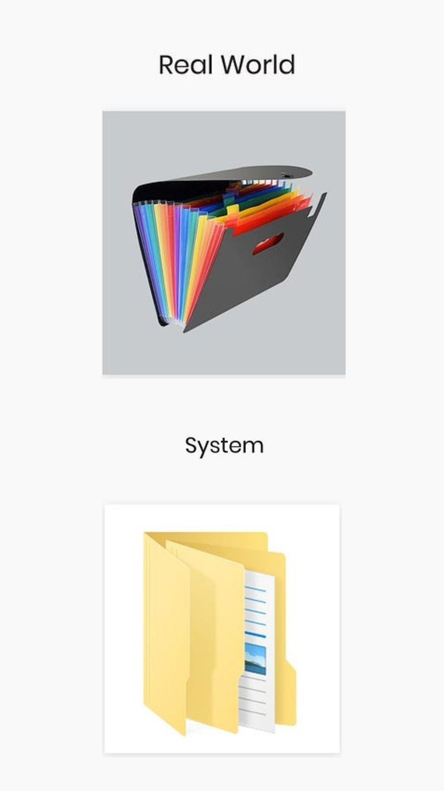
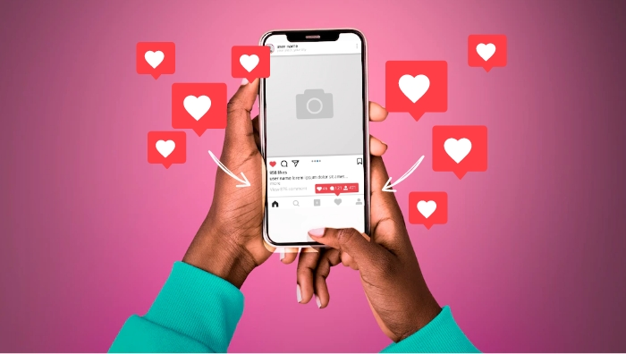

10
Heurísticas
de usabilidade
por Jakob Nielsen
1
Visibilidade do Estado do Sistema
O design deve manter o usuário informado sobre o que está acontecendo no sistema. Isso ensina os usuários quais são suas principais interações e quais serão seus próximos passos. Quanto mais previsível o design for, mais confiança na marca e produto.
Essa visibilidade pode ocorrer continuamente (como um indicador de Wi-Fi) ou na forma de feedbacks, mostrando o status quando necessário. A base desse fundamento é a confiança: os usuários devem ter a certeza que um botão clicado está sendo executado.
2
Correspondência Entre o Sistema e o Mundo Real

Exemplo: Metáforas visuais do mundo físicoNo mundo real já existe uma série de conceitos e objetos consolidados: ícones, metas visuais, símbolos e palavras. O sistema precisa corresponder a essas ideias para garantir clareza e previsibilidade ao usuário.
A ideia principal é nunca presumir que o entendimento do usuário coincide com o do desenvolvedor. Deve-se priorizar o uso de termos simples, intuitivos e familiares.
Exemplo do cotidiano: A experiência de ler um livro. Em livros físicos, as pessoas marcam páginas e usam marcadores. Na experiência digital, leitores de PDF abstraem esses exatos conceitos para criar familiaridade instantânea.
3
Controle de Usuário e Liberdade
Os usuários assim como todos, cometem erros. É por causa disso, que devem ter a possibilidade de refazer, voltar
ou cancelar visivelmente. Por que isso é importante? Porque dá a liberdade para o usuário clicar em um link,
por exemplo, sem medo de não ter a possibilidade de voltar para a página anterior. Isso dá mais LIBERDADE para
explorar sua aplicação.
A resposta de um teste interessante feito recentemente, conclui que muitos usuários ao depararem-se com uma tela em
sobreposição tendem a usar o botão de voltar ao invés do botão de fechar. Por isso é importante que as aplicações
tenham suporte para atingir o mesmo efeito em diferentes tipos de ações.
4
Consistência e Padrões
Mantenha padrões consolidados no sistema. Os usuários não devem ter que adivinhar se palavras, elementos ou ações diferentes significam a mesma coisa.
Visual
Cores, tipografia e hierarquia constantes em todas as telas.
Layout
Posicionamento padronizado de botões, menus e navegação.
Entrada de Dados
Formulários e seletores com comportamentos previsíveis.
Conteúdo
Tom de voz, terminologias e rótulos uniformes.
5
Prevenção de Erros
Melhor do que uma boa mensagem de erro é um design cuidadoso que evita que o problema aconteça. Elimine condições propensas a erros ou peça confirmação antes de ações críticas.
Tem certeza de que deseja excluir permanentemente este arquivo? Esta ação não poderá ser desfeita.
6
Reconhecimento em vez de Recordação
Minimize a carga de memória do usuário tornando elementos, ações e opções visíveis. O usuário não deve ter que se lembrar de informações de uma parte da interface para outra.
7
FLEXIBILIDADE E EFICIÊNCIA DE USO
Partindo do princípio que existem usuários mais experientes que outros, é notável que um bom UX vai buscar atender todos os públicos. Esse princípio conta sobre a capacidade de fazer novos caminhos para executar uma mesma ação, atalhos. Além disso, é interessante a adição de funcionalidades de customização, as quais permite o indivíduo usar a aplicação como melhor deseja. Essa personalização do usuário não deve partir apenas dele mesmo, escolhendo maneiras de utilizar a interface, mas também do sistema por trás. Ele deve trazer recomendações. Um exemplo muito comum desses conceitos é copiar um texto: pessoas podem usar tanto Ctrl + C, quanto botão esquerdo do mouse + copiar. Ou até as curtidas do Instagram, que podem ser executadas por meio de um botão ou dois cliques.

8
Design Estético e Minimalista
Certifique-se que sua interface não contém informações desnecessárias, gerando poluição visual e confusão para o usuário. Priorize os conteúdos e recursos: algo que não é muito usado ou não alinha com os objetivos empresariais, remova.
9
Ajudar os usuários a reconhecer, diagnosticar e recuperar ERROS
Mensagens de erro devem ajudar a guiar o indivíduo. Quando são demasiadamente genéricas ou não claras, dificilmente terão um efeito educativo. Sinais visuais, como cores, fontes e linguagem cotidiana são elementos que irão agilizar a solução do problema.
10
Ajuda e documentação
Apesar de uma interface ter que ser intuitiva, a documentação ainda é necessária e saber utilizá-la também. Ela deve estar presente em momentos específicos e que provavelmente alguns vão precisar. Obrigatoriamente, deve ser de fácil acesso entre o sistema também, de maneira objetiva, com passo-a-passo.
Relatório
Essa é uma interface desenvolvida para a disciplina Desenvolvimento de Interfaces no CEUB. A tarefa tem por objetivo a elaboração de uma interface web focada nos conceitos de Jakob Nielsen, os quais foram usados e aprendidos durante o processo de confecção. Além disso, busca aprender num formato de aula invertida o uso do CSS. Nessa atividade busquei melhorar meus designs, soltando a criatividade por meio de uma ferramenta de design (Canva) para a prototipação e posterior codificação. Dos novos conceitos que eu aprendi foram: uso de transições, gradientes, imagens de fundo, slide de ícones, criação de variáveis em CSS, etc.
Referências Utilizadas:
10 Heurísticas de Usabilidade
Como criar o slide de ícones
Ícones gratuitos
Fontes Google
Fontes Amazon
Além de conhecimentos prévios adquiridos no desenvolvimento de projetos, vídeos no Youtube e pesquisas.
Sobre Mim
Eu me chamo Anne, futura desenvolvedora Fullstack focando na construção da base dos conhecimentos fundamentais: lógica de programação, servidores, dados, design de interface e bibliotecas correlatas, redes, cibersegurança, IA, Cloud Computing, etc. Gosto muito de áreas que envolvem lógica e essa é uma área que me interessa porque se mistura com outro interesse meu: a arte. Quero melhorar meus conhecimentos técnicos e colaborativos para me tornar uma profissional completa para o mercado de trabalho. Me acompanhe: